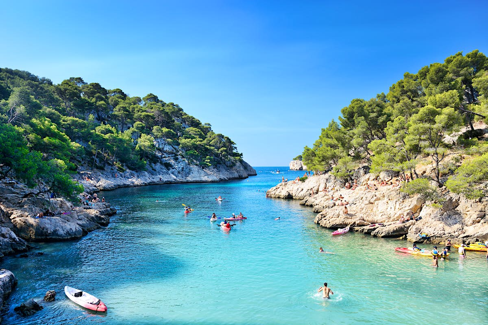
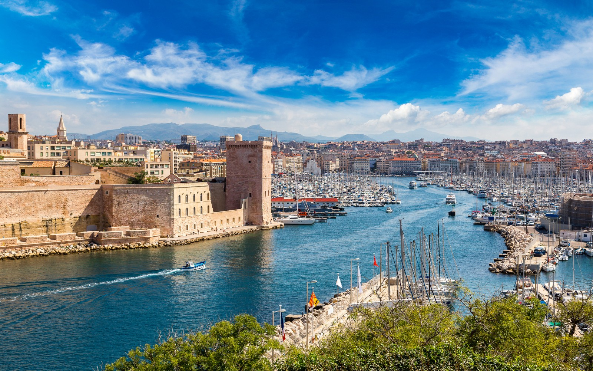
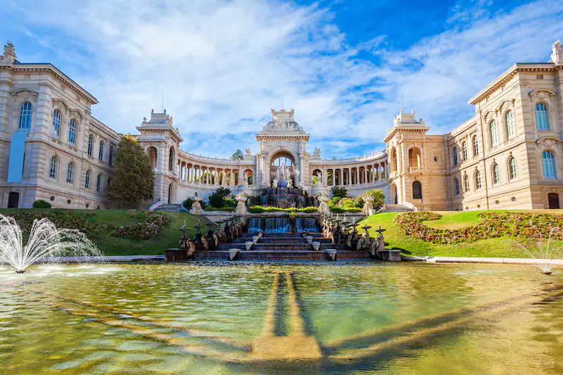
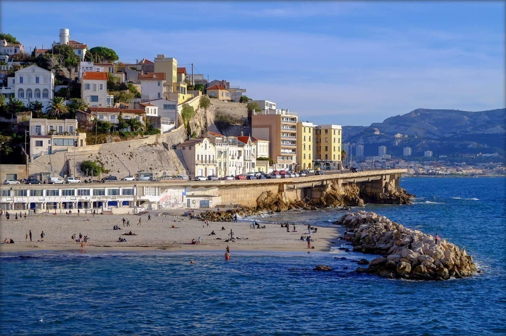
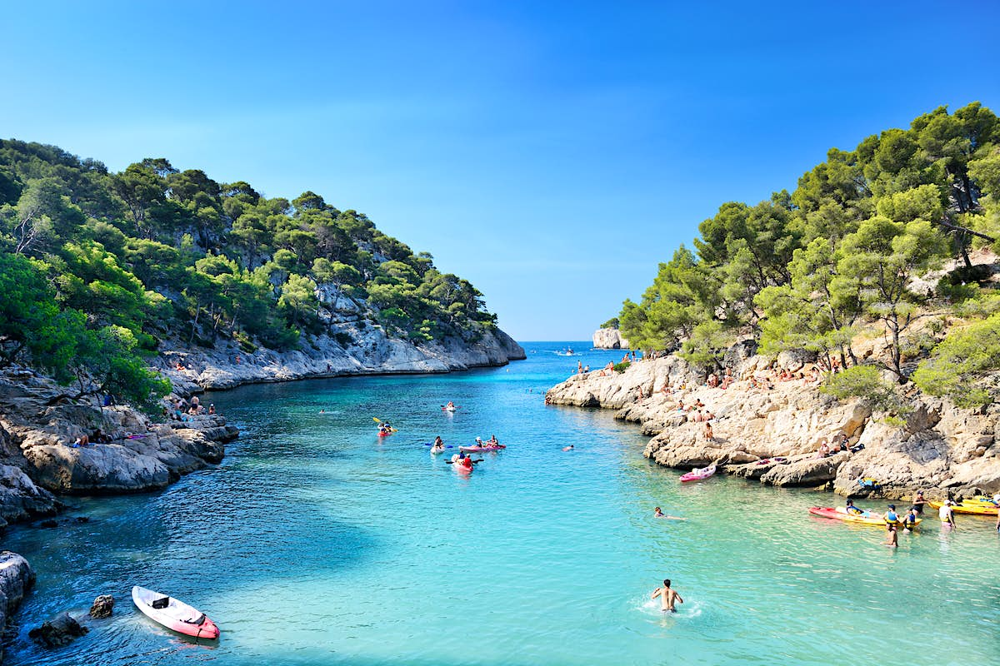
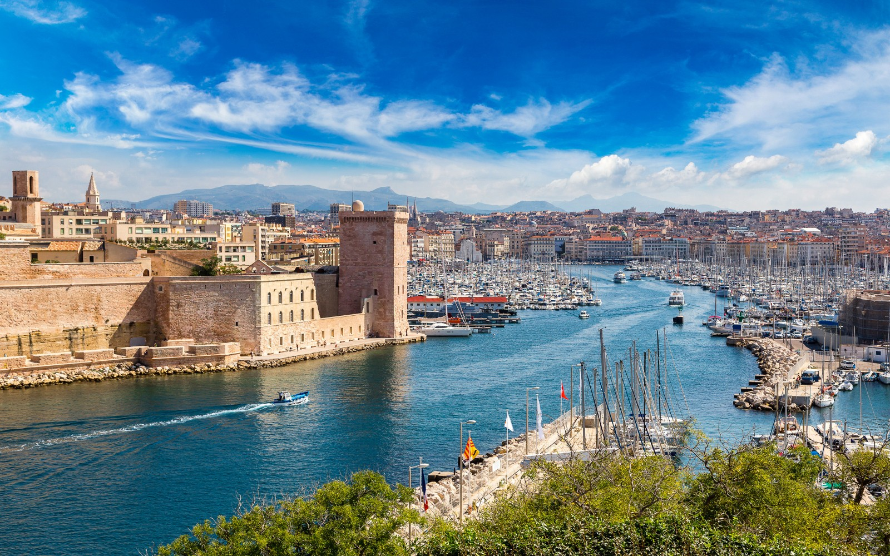
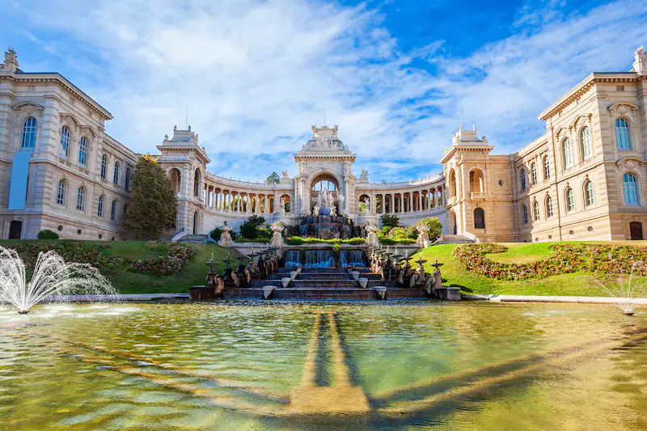
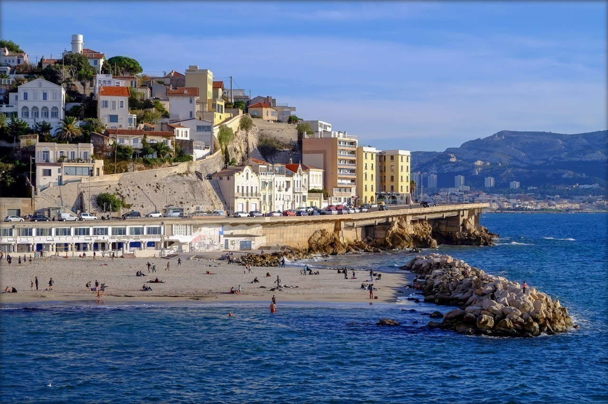

L'Histoire de marseille
Aussi plus ancienne ville de France, fondée vers 600 av. J.-C. par des marins et des marchands grecs originaires de Phocée (aujourd'hui Foça en Turquie, près d'Izmir) sous le nom de Μασσαλία / Massalía), Marseille est depuis l'Antiquité un important port de commerce et de passage. Elle connaît un essor commercial considérable pendant la période coloniale et plus particulièrement au cours du xixe siècle, devenant une ville industrielle et négociante prospère.
Héritage de ce passé, le Grand port maritime de Marseille (GPMM) et l'économie maritime constituent l'un des pôles majeurs de l'activité régionale et nationale6, et Marseille reste le premier port français, le deuxième port méditerranéen7 et le cinquième port européen8. Sa situation privilégiée en bordure de la Méditerranée permettant l'arrivée de nombreux câbles sous marins fait également de Marseille le neuvième hub de connexion au réseau internet mondial avec une des plus fortes croissances mondiales sur ce secteur.
L'ouverture de Marseille sur la mer Méditerranée en fait depuis ses origines une ville cosmopolite marquée par de nombreux échanges culturels et économiques avec l'Europe du Sud, le Proche-Orient, l'Afrique du Nord et l'Asie. Elle est d'ailleurs souvent considérée, depuis le xviie siècle, comme la « Porte de l'Orient » sur le littoral méditerranéen français.
 






